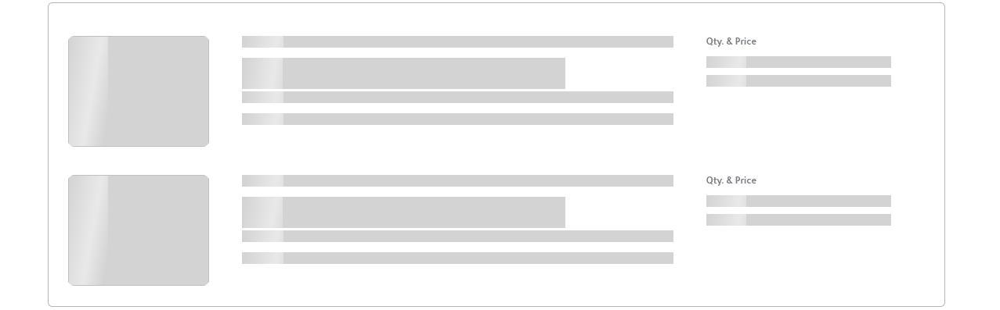

Page loaders are visual indicators displayed on websites while the content is being loaded. They improve user experience by providing feedback that the page is actively processing the request, reducing perceived wait times, and preventing users from abandoning the site due to uncertainty. Page loaders can take various forms, such as spinners, progress bars, or animations, and are designed to be visually engaging and informative.
Spinner Loader
List items, small forms, filter popups, Should able to use thse OXD Spinner loader.
Skeleton loaders are static or animated placeholders displayed while content is loading, providing a visual indication of the type of content (e.g., images, text) that will appear. These light gray or neutral-colored boxes reduce perceived wait times and offer a more engaging experience than blank screens or spinners, which can create uncertainty.
Skeleton loaders should not be used for long-running processes or for very fast processes that take less than 300ms. As soon as the data is ready, the content replaces the placeholders.
Number of Columns
- When a list does not have a specified column configuration, it should always display the actual number of columns in the list.
- If a list has a set number of columns configured, it should always display the default number of columns.
The number of columns can sometimes be determined based on specific configurations, deviating from the standard. (This can be happened due to various scenarios, such as client usage etc..)
When list skeletons with hidden columns, such as action buttons that only appear on hover, it is unnecessary to include these action buttons in the skeleton view. Instead, increase the width of the visible columns to utilize the available space effectively.
Row Height & Adapting to Content
For rows where different types of content (text, images, icons, etc.) are present, represent each type in the skeleton screen. For example, if a row contains an image and text, show a placeholder for the image and text in the skeleton screen accordingly.
Also Without showing exact number of text lines It's possible to use visual cues such as gradients, fading effects within the skeleton screen to indicate where content might extend beyond the visible area. This helps users understand that the row height can vary without disrupting the overall layout consistency.
It is not necessary to match the exact number of items in the skeleton loader. Better if it's possible to display the layout and the maximum number of elements,but it is not essential to show every single item.
Ensure that skeleton loading is applied to all content, including the top part of the list view,when the screen is loading for the first time.(search bar, filter,configuartion buttons and etc )
Row Display Limits
Display up to 15 rows in the skeleton loader (If the screen still has more empty space, may need to define no of rows deviating from the standard)
Depending on the row height,
- For rows with a height of 45px or less, display 15 rows
- For rows with a height greater than 45px, display 10 rows
Indicating Headers
- Size - Column header width should matches the width of the corresponding row data
- Placeholder - Instead of displaying actual column header names, use skeleton indicators
- Differentiation - Use different styles to differentiate between column headers and data rows (e.g., darker shades)
- Consistency - Maintain consistent representation of column headers throughout the system
Hide Componenets During Initial Loading
Hide the pagination during the initial loading of the screen. This prevents users from interacting with pagination elements while the content is still loading
Hide the side panel collapse button during skeleton loading. This prevents any potential issues that could arise from users interacting with the side panel while the skeleton loading is in progress.
Handling Empty List Tabs
For empty tabs with 0 row items, do not display the spinner loader or the empty message initially. Use the same skeleton loading style instead of any other loader or spinner
Use Cases
OXD List view , OXD Forms, OXD Dashbord, should able to use Skeleton loader
- First-Time Access: When users initially navigate to a screen or list, especially if it involves fetching data from a server
- Navigating Between Screens: Whenever users navigate to a different section or screen within the application, if new data needs to be fetched or if there's a delay in rendering content. This includes switching tabs or pages where data varies
- Filter Application: When users apply filters or sorting options that trigger a change in displayed content
- Reapplying Filters: After users modify existing filters or sort orders, display the skeleton screen to show that the updated data is loading